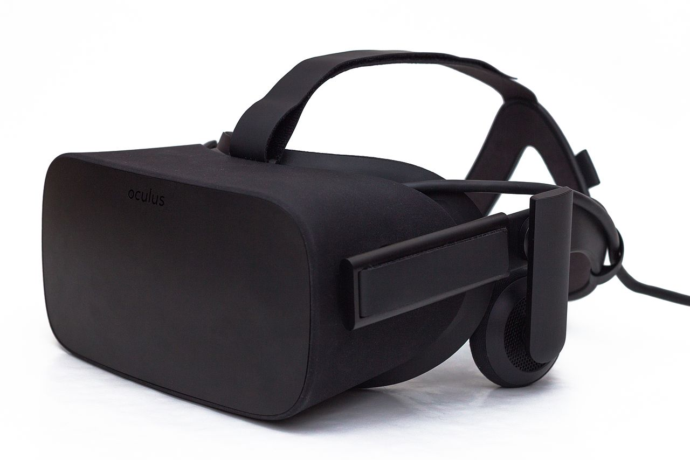

The Oculus Rift is a virtual reality headset developed and manufactured by Oculus VR, a division of Facebook Inc., released on March 28, 2016. Oculus initiated a Kickstarter campaign in 2012 to fund the Rift's development, after being founded as an independent company two months prior. The project proved successful, raising US$2.5 million. In March 2014, Facebook purchased Oculus for $2 billion. In March 2017, after 3 years at the company, it was announced Oculus founder and creator Palmer Luckey was leaving Facebook. The Rift has gone through various pre-production models since the Kickstarter campaign, around five of which were demonstrated to the public. Two of these models were shipped to backers, labelled as 'development kits'; the DK1 in mid 2013 and DK2 in mid 2014, to give developers a chance to develop content on time for the Rift's release. However, both were also purchased by a large number of enthusiasts who wished to get an early preview of the technology. The Rift has a stereoscopic OLED display, 1080×1200 resolution per eye, a 90 Hz refresh rate, and 110° field of view. It has integrated headphones which provide a 3D audio effect, rotational and positional tracking. The positional tracking system, called "Constellation", is performed by a USB stationary infrared sensor that is picking up light that is emitted by IR LEDs that are integrated into the head-mounted display. The sensor normally sits on the user's desk. This creates 3D space, allowing for the user to use the Rift while sitting, standing, or walking around the same room.
Brackets est un projet open source. Des développeurs web du monde entier participent à l’amélioration de l’éditeur de code. Nombreux sont ceux qui créent des extensions afin de développer les possibilités de Brackets. Donnez-nous votre avis, partagez vos idées ou participez directement au projet.